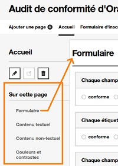
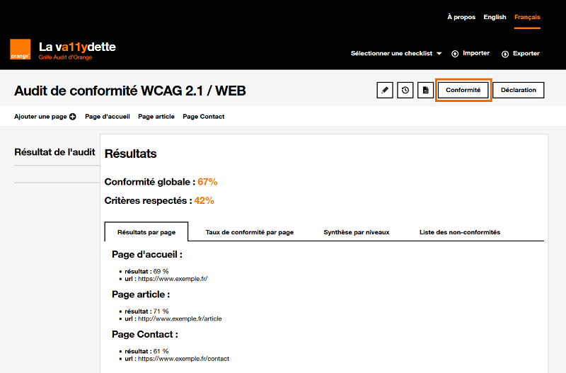
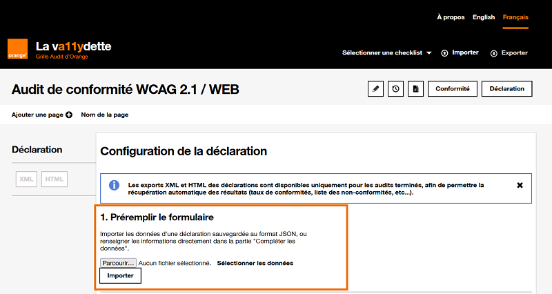
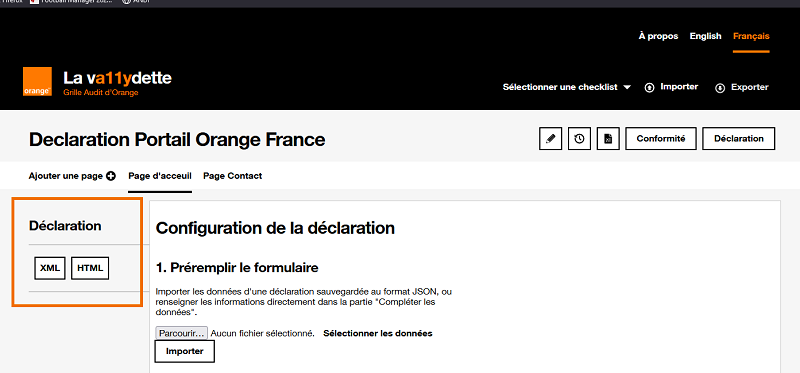
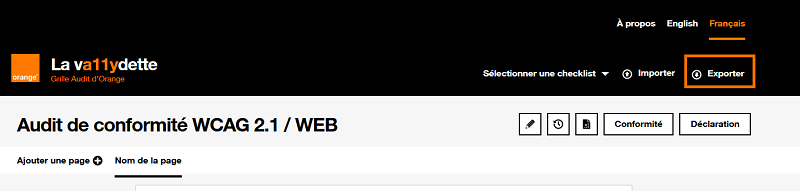
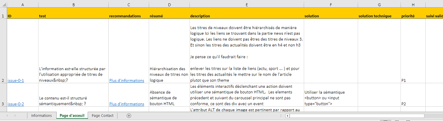

La Va11ydette : le guide utilisateur
1. Introduction : pourquoi La Va11ydette
La Va11ydette est une application web qui est une liste de questions / réponses afin de faciliter les audits d'accessibilité.
Elle prend en charge le référentiel WCAG 2.2, les checklists sont divisées en trois parties ; Web, Android et IOS. Le référentiel RGAA 4.1 est aussi disponible.
Une fois que vous aurez fini de répondre à la checklist, un taux de conformité sera attribué à votre audit.
Le but de ce guide utilisateur sera de vous montrer toutes les fonctionnalités disponibles et de vous aider à compléter votre audit.
2. Utiliser la Va11ydette
2.1 Créer son audit
Une fois que vous avez choisis la checklist qui vous correspond, un nom par défaut est attribué à votre audit, nous vous recommandons de le changer en cliquant sur le bouton "Modifier le nom de l'audit" situé juste à côté du titre, un modal s'ouvrira avec un champ permettant de le modifier.

2.2 Les pages
2.2.1 Ajouter des pages
Il est possible de rajouter autant de pages que vous le souhaitez à votre audit. Il suffit d'appuyer sur le bouton "Ajouter une page", une fenêtre modale s'ouvrira où vous pourrez définir le nom de la page et son URL. Renseignez bien l'url de vos pages, elle vous permettra de naviguer facilement vers les pages à auditer.
Pour naviguer entre les pages, il existe un menu de navigation situé juste après le bouton "Ajouter une page".

2.2.2 Gestion d'une page
Toutes les fonctionnalités de la page sont décrites dans la liste ci-dessous :
-
Bouton qui permet de modifier le nom de la page et son URL.
-
Bouton qui permet d'ouvrir dans un nouvel onglet l'URL de la page. Ce bouton sera désactiver si aucune URL est renseignée.
- Bouton qui permet de supprimer la page. A noter qu'il est impossible de supprimer la première page de l'audit.
-
Sur cette page, une navigation qui permet de se déplacer directement vers certaines catégories de critères sur la page.
 -
Affichage, deux boutons permettant de déplier ou replier tous les tests. Les déplier permettra d'afficher toutes les informations pour valider ou invalider un critère.

-
Filtres, ensemble de filtre permettant de modifier l'affichage de la page :
- Afficher les critères en fonction de leurs résultats (conforme, non-conforme ...).
- Afficher les critères de bonnes pratiques (ces critères ne sont pas pris en compte lors du calcul du taux de conformité).
- Afficher les critères selon la norme WCAG.

2.3 Les critères
Le contenu de la page est composé d'un certain nombre de critère, en fonction de la checklist choisie.
Chaque critère est composée :
- De la question pouvant répondre au critère.
- Des boutons radio permettant de sélection l'état du critère (conforme, non-conforme, non-applicable, non-testé).
- Des boutons permettant d'ajouter une anomalie/commentaire, ou de la modifier.
- D'un bouton permettant d'afficher les informations supplémentaires du critère . Les informations supplémentaires expliquent plus en détails comment valider ou invalider le critère.
- Dans les informations supplémentaires, il y a une case à cocher, qui permet d'appliquer automatiquement ce résultat à la page suivante, ça peut vous être utile si vous trouvez une erreur dans des éléments communs de la page. Si la case est cochée, le critère de la page suivante prendra le résultat du critère de la page courante, les anomalies seront aussi copiées. Si des pages sont créées après la case cochée, les critères prendront automatiquement le résultat précédent et ses anomalies.
- Si on est dans un critère d'accessibilité, il y aura le numéro WCAG auquel le critère est rattaché.
2.3.1 Les anomalies
Lorsque vous mettez un critère en non-conforme, il est important de rajouter une anomalie. Ça vous permettra de retrouver facilement les erreurs sur les pages auditées.
Il suffit de cliquer sur le bouton "Ajouter une anomalie" . Une fenêtre modale s'ouvrira avec 4 champs :
- le champ "résumé" qui est obligatoire, il sert à mettre un bref descriptif de l'anomalie.
- le champ "description" qui est obligatoire, il sert à faire une description complète de l'erreur, le but de ce champ est de retrouver rapidement l'erreur qui a entrainé la non-conformité, il faut être le plus précis possible.
- le champ "solution", il sert à aider les utilisateurs à corriger, la non-conformité
- le champ "solution technique", si c'est possible de mettre le code qui permet de corriger l'erreur, c'est ici qu'il faut la renseigner

Une fois les anomalies créées, il est possible de les modifier ou les supprimer en cliquant sur le bouton "Éditer une anomalie" .
2.4 Conformité
Le bouton "Conformité" est un récapitulatif de votre audit. Il affiche :
- la Conformité globale, s'obtient en faisant la moyenne des mesures de chaque page.
- les Critères respectés, s'obtient en divisant le nombre de critère conforme par le nombre de critère applicable.
- la liste de chaque page avec leur nom, leur Url et leur taux de conformité.
L'onglet liste des non-conformités révèle toutes les critères non-conforme avec le résumé des anomalies.
Pour les checklists WCAG vous aurez deux onglets supplémentaires, récapitulant les critères A et AA de chaque page et les critères conformes/non-conformes
2.5 Déclaration
Sur certaines checklists, un bouton "Déclaration" est présent, il vous permet de générer une déclaration pour audit.
Pour la générer, il faut remplir plusieurs champs :
- Nom du projet, le nom du projet que vous venez d'auditer
- Langue, la langue dans laquelle sera générée la déclaration
- Date, la date à laquelle vous avez réalisé l'audit
- Type de résultat, le type de mesure de conformité que vous afficherez sur la déclaration
- Déclarant, l'entité qui a réalisé l'audit et son siège social
- Contact, un moyen de contact afin de permettre aux utilisateurs de faire des retours sur l'accessibilité du site
- Schéma pluriannuel, un lien vers le schéma pluriannuel doit être présent sur votre déclaration
- Technologies, liste des technologies utilisées sur le site audité
- Tests, liste des outils de test utilisés pendant votre audit
- Environnements, l'environnement sur lequel vous avez audité le site, par exemple Firefox v78.15 et NVDA v2022.1
- Dérogation et Exemption, des contenus non accessibles qui sont soumis à une dérogation pour charge disproportionnée, elles doivent être expliquées et motivées
Une fois ces champs renseignés, vous pouvez enregistrer vos données afin de générer la déclaration. Vous pouvez aussi télécharger les données au format JSON, ça vous permettra de les importer pour vos prochaines déclarations, et de gagner du temps pour remplir le formulaire.
Vous pourrez ensuite générer la déclaration avec les informations remplis, au format HTML ou XML.
2.6 Sauvegarder son audit
Il existe deux façons de sauvegarder son audit en cours :
-
La première ce fait automatiquement, vos 8 derniers audits sont sauvegardés dans le stockage local de votre navigateur.
Cette solution n'est pas la plus robuste car vous pouvez perdre vos données si vous perdez le cache de votre navigateur ou si vous faites beaucoup d'audit.
Pour accéder à vos audits sauvegarder dans le navigateur, cliquez sur le bouton . Vous pouvez aussi supprimer les audits sauvegardés.
-
Vous pouvez aussi exporter votre audit au format JSON, le bouton est présent dans le header de la Va11ydette.
Une fois l'audit exporté, vous pouvez l'importer avec le bouton situé aussi dans le header de la Va11ydette

2.7 Export Excel
Il est aussi possible de faire un export au format Excel .
Toutes les anomalies renseignées pendant votre audit seront présentes dans le fichier excel. Ça peut être utile pour faire de la suivie de correction si vous souhaitez accompagner un projet.
